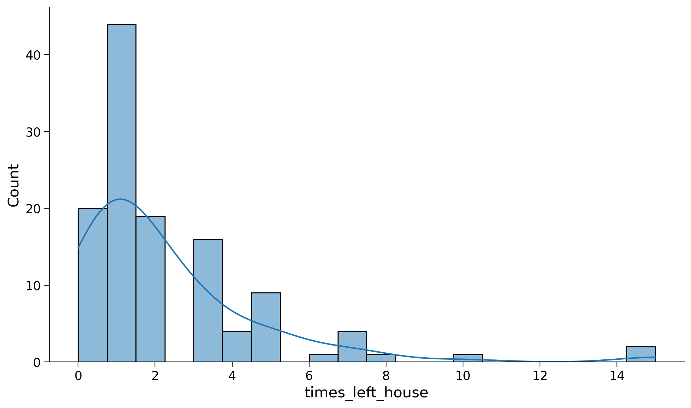
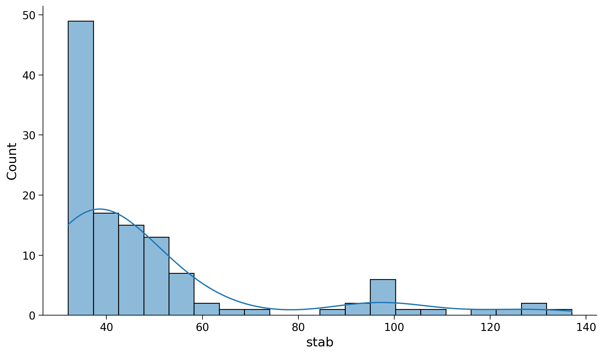
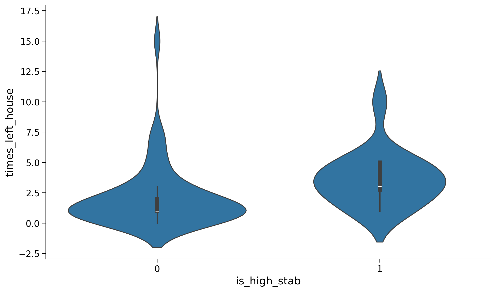
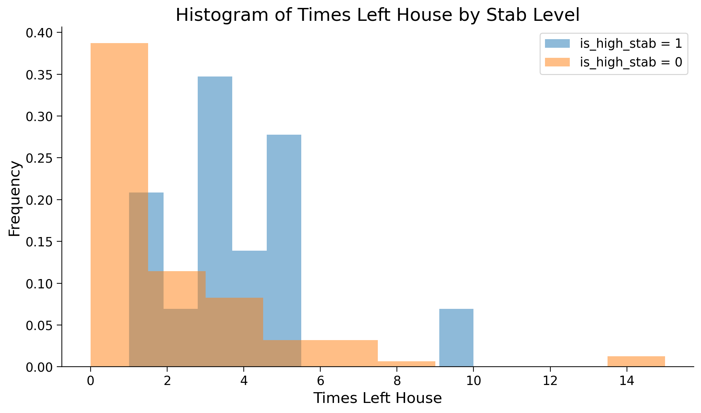
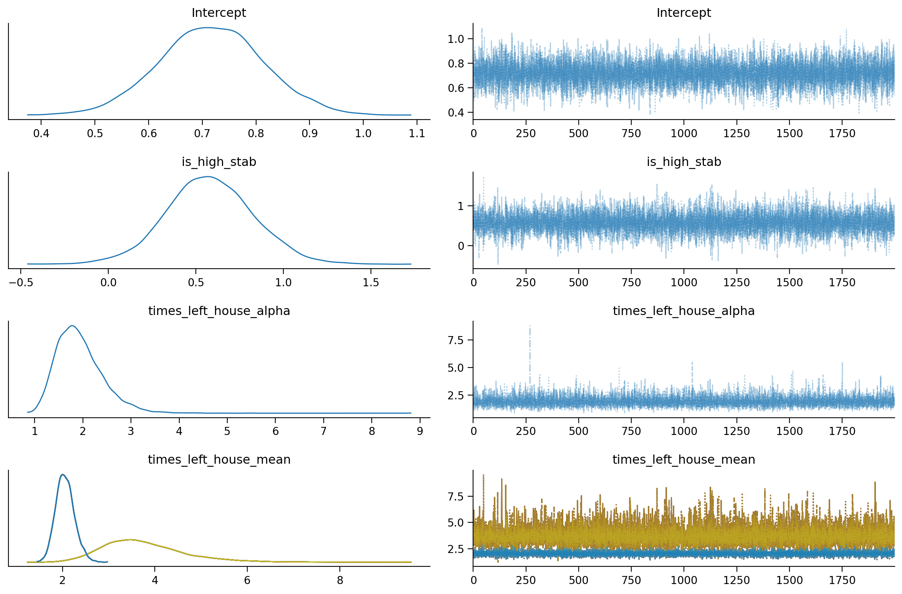
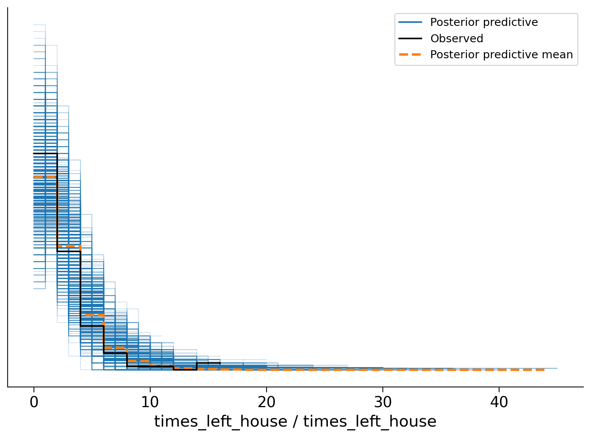

✏️ Esercizi#
Per questi esercizi, useremo i dati tratti da O’Connell, et al. (2021). Reduced social distancing during the COVID-19 pandemic is associated with antisocial behaviors in an online United States sample. PLoS ONE.
import numpy as np
import pandas as pd
import seaborn as sns
from matplotlib import pyplot as plt
import statsmodels.api as sm
import pymc as pm
import bambi as bmb
import arviz as az
/var/folders/cl/wwjrsxdd5tz7y9jr82nd5hrw0000gn/T/ipykernel_66696/2880374236.py:2: DeprecationWarning:
Pyarrow will become a required dependency of pandas in the next major release of pandas (pandas 3.0),
(to allow more performant data types, such as the Arrow string type, and better interoperability with other libraries)
but was not found to be installed on your system.
If this would cause problems for you,
please provide us feedback at https://github.com/pandas-dev/pandas/issues/54466
import pandas as pd
%config InlineBackend.figure_format = 'retina'
%load_ext watermark
RANDOM_SEED = 123
rng = np.random.default_rng(RANDOM_SEED)
plt.style.use("https://raw.githubusercontent.com/NeuromatchAcademy/course-content/main/nma.mplstyle")
Questo studio ha valutato se i comportamenti di distanziamento sociale (all’inizio della pandemia di COVID-19) fossero associati a comportamenti antisociali auto-riferiti. Per misurare un indice del comportamento di distanziamento sociale, ai partecipanti è stata presentata un’immagine di una sagoma di adulto circondata da un bordo rettangolare. È stato chiesto loro di cliccare su un punto nell’immagine che rappresentasse a che distanza solitamente si trovavano dalle altre persone.
Qui è presente una heatmap che mostra a che distanza i partecipanti hanno riportato di stare dalle altre persone nell’ultima settimana, con un colore marrone scuro che indica una maggiore densità di risposte. La coordinata della risposta media, indicata con un +, rappresenta una distanza di circa 98 pollici (2.5 metri).
Leggiamo i dati riportati dagli autori.
df = pd.read_csv("../data/stab.csv")
VSCode tronca l’output stampato sullo schermo. Per elencare tutte le colonne uso la funzione to_string che però si applica solo ai DataFrame.
cols = df.columns
mydf = pd.DataFrame()
mydf["cols"] = cols
print(mydf["cols"].to_string())
0 subID
1 mturk_randID
2 suspect_itaysisso
3 Country
4 Region
5 ISP
6 loc_US
7 loc_state
8 loc_zipcode
9 loc_County
10 loc_2010population
11 loc_Land_Sq_Mi
12 loc_Density_Sq_Mile
13 loc_Covid_Cases_april_1_2020
14 attn1
15 attn2
16 attn3
17 StartDate
18 EndDate
19 Duration
20 worry_self
21 likely_self
22 health_self
23 likely_lovedone
24 health_lovedone
25 worry_american
26 likely_american
27 health_american
28 highrisk_self
29 highrisk_lovedone
30 highrisk_self_or_livewith
31 financial_self
32 financial_american
33 wash_perday_actual
34 wash_perday_ideal
35 socialdistancing
36 socialdistancing_for_me
37 socialdistancing_for_close
38 socialdistancing_for_americans
39 socialdistancing_experience
40 times_left_house_pastweek
41 distance_from_others_feet_lastwe
42 ppe_freq_lastweek
43 times_left_house_for_vunerable_p
44 think_about_pandemic_perday
45 months_expect_gov_measures
46 household_n_people
47 symptoms
48 symptoms_text
49 silhouette_dist_X
50 silhouette_dist_Y
51 silhouette_dist_region
52 STAB_1
53 STAB_2
54 STAB_3
55 STAB_4
56 STAB_5
57 STAB_6
58 STAB_7
59 STAB_8
60 STAB_9
61 STAB_10
62 STAB_11
63 STAB_12
64 STAB_13
65 STAB_14
66 STAB_15
67 STAB_16
68 STAB_17
69 STAB_18
70 STAB_19
71 STAB_20
72 STAB_21
73 STAB_22
74 STAB_23
75 STAB_24
76 STAB_25
77 STAB_26
78 STAB_27
79 STAB_28
80 STAB_29
81 STAB_30
82 STAB_31
83 STAB_32
84 sex
85 sex_1f
86 age
87 race
88 hispanic
89 education
90 occupational_status
91 occupational_status_text
92 lefthouse_for_work_lastweek
93 coded_lefthouse_work
94 household_income
95 num_children
96 relatives_close_under65
97 relatives_close_over65
98 current_mentalhealth
99 current_mentalhealth_text
100 past_mentalhealth
101 past_mentalhealth_text
102 neurologicaldisorder
103 neurologicaldisorder_text
104 drugs_lastweek
105 drugs_lastweek_text
106 STAB_physical
107 STAB_social
108 STAB_rulebreaking
109 STAB_total
110 ppe_freq_coded
111 household_income_coded
112 income_over60000
113 ppe_freq_coded_2
114 age_centered
115 education_coded
116 education_4yr
117 STAB_total_centered
118 STAB_total_min32
119 silhouette_dist_X_min81
120 silhouette_dist_X_inches
121 violated_distancing
122 STAB_rulebreak_rmECONOMIC
123 STAB_total_rmECONOMIC
124 STAB_total_rmECONOMIC_centered
125 household_income_coded_centered
Esercizio 1#
a Trovare il numero di righe e di colonne del DataFrame.
df.shape
(131, 126)
(a) Selezionare le colonne “silhouette_dist_X_min81”, rinominandola come “distance”, “STAB_total”, rinominandola come “stab”, e “times_left_house_pastweek”, rinominandola come “times_left_house”. Calcolare il numero di elementi in ciascuno di questi vettori. (b) Utilizzando un ciclo for o una list comprehension, individuare gli indici delle righe in cui la variabile “distance” presenta un valore mancante. (c) Scrivere una funzione che accetti una lista come input e restituisca il conteggio di valori NaN presenti nella lista, fornendo commenti per ciascun passaggio del codice. Sfruttare la proprietà degli NaN secondo cui non sono uguali a se stessi.
value = np.nan
print(value)
nan
value == value
False
Testare la funzione sulle liste “distance”, “stab” e “times_left_house”. (d) Creare una lista di 10 elementi contenente 5 numeri, 2 stringhe e 3 valori NaN. Testare la funzione creata su questa lista. (e) Creare un DataFrame con le variabili “distance”, “stab” e “times_left_house”. Filtrare il DataFrame in modo da escludere dati mancanti. (f) Utilizzando Seaborn, creare un istogramma con KDE sovrapposto per le variabili “times_left_house” e “stab”. Interpretare i grafici. (g) Aggiungere al DataFrame la variabile “is_high_stab”, che assume valore 1 se “stab” è minore o uguale a 80 e 0 altrimenti. Generare due violin-plot, uno per ciascuna modalità di “is_high_stab”, per la variabile “times_left_house”. Commentare i risultati. (h) Calcolare la media, la moda, la deviazione standard e la Deviazione Assoluta dalla Media (MAD) per i due gruppi.
distance = df["silhouette_dist_X_min81"]
stab = df["STAB_total"]
times_left_house = df["times_left_house_pastweek"]
len(distance)
131
len(stab)
131
b
nan_indices = [i for i in range(len(distance)) if np.isnan(distance[i])]
print(f"Observations with NaN values: {nan_indices}")
Observations with NaN values: [17, 22, 24, 25, 39, 51, 60, 67, 71, 94]
c
def count_nans(data_list):
"""Count the number of NaNs in a list
Args:
data_list (list): A list that contains the observations
Returns:
int: The number of NaNs found in the list
"""
nan_count = 0
for value in data_list:
if value != value:
nan_count += 1
return nan_count
count_nans(distance)
10
count_nans(stab)
0
count_nans(times_left_house)
0
d
new_list = [1, np.nan, 2, 3, np.nan, 4, 5, np.nan, "qualcosa", "qualcosa d'altro"]
print(new_list)
[1, nan, 2, 3, nan, 4, 5, nan, 'qualcosa', "qualcosa d'altro"]
count_nans(new_list)
3
e
new_df = pd.DataFrame()
new_df["distance"] = distance
new_df["stab"] = stab
new_df["times_left_house"] = times_left_house
new_df["subID"] = df["subID"]
new_df.head()
| distance | stab | times_left_house | subID | |
|---|---|---|---|---|
| 0 | 441.0 | 51 | 3 | 1001 |
| 1 | 287.0 | 94 | 5 | 1002 |
| 2 | 313.0 | 95 | 4 | 1003 |
| 3 | 452.0 | 45 | 2 | 1004 |
| 4 | 297.0 | 37 | 0 | 1005 |
new_df.shape
(131, 4)
df_cleaned = new_df.dropna()
df_cleaned.shape
(121, 4)
f
plt.figure(figsize=(10, 6))
sns.histplot(data=df_cleaned, x='times_left_house', bins=20, kde=True);

plt.figure(figsize=(10, 6))
sns.histplot(data=df_cleaned, x='stab', bins=20, kde=True);

g
Gli autori stanno indagando la possibile associazione tra il numero di volte in cui le persone sono uscite di casa durante la fase iniziale della pandemia di COVID-19 e la loro propensione antisociale, valutata tramite il reattivo STAB (Antisocial Behavior Score). A tal fine, i partecipanti sono stati classificati in due categorie distinte: coloro che mostrano livelli antisociali elevati (con un punteggio STAB superiore a 80) e coloro che presentano livelli antisociali bassi (con un punteggio STAB inferiore o uguale a 80).
Per analizzare questa associazione, si produca una visualizzazione grafica dei dati per i due gruppi di partecipanti. Ad esempio, potrebbe essere utile un istogramma o un violin plot che mostri la distribuzione del numero di volte in cui i partecipanti sono usciti di casa, separando i dati in base ai livelli antisociali (alti o bassi). Si interpreti.
df_cleaned["is_high_stab"] = np.where(df_cleaned["stab"] > 80, 1, 0);
/var/folders/cl/wwjrsxdd5tz7y9jr82nd5hrw0000gn/T/ipykernel_66696/262644604.py:1: SettingWithCopyWarning:
A value is trying to be set on a copy of a slice from a DataFrame.
Try using .loc[row_indexer,col_indexer] = value instead
See the caveats in the documentation: https://pandas.pydata.org/pandas-docs/stable/user_guide/indexing.html#returning-a-view-versus-a-copy
df_cleaned["is_high_stab"] = np.where(df_cleaned["stab"] > 80, 1, 0);
plt.figure(figsize=(10, 6))
sns.violinplot(x="is_high_stab", y="times_left_house", data=df_cleaned);

y1 = df_cleaned[df_cleaned["is_high_stab"] == 1]["times_left_house"]
y0 = df_cleaned[df_cleaned["is_high_stab"] == 0]["times_left_house"]
plt.figure(figsize=(10, 6))
# Plot the histogram for y1
plt.hist(y1, alpha=0.5, label='is_high_stab = 1', density=True, bins=10)
# Plot the histogram for y0
plt.hist(y0, alpha=0.5, label='is_high_stab = 0', density=True, bins=10)
plt.title('Histogram of Times Left House by Stab Level')
plt.xlabel('Times Left House')
plt.ylabel('Frequency')
plt.legend();

h
Si calcolino le statistiche descrittive per i due gruppi di partecipanti e si interpreti.
grouped = df_cleaned.groupby("is_high_stab")["times_left_house"]
summary_stats = grouped.agg(median=np.median, mean=np.mean, mad=sm.robust.scale.mad, std=np.std)
print("Summary statistics per group:\n", summary_stats)
Summary statistics per group:
median mean mad std
is_high_stab
0 1.0 2.047619 1.482602 2.547174
1 3.0 3.625000 2.223903 2.217356
/var/folders/cl/wwjrsxdd5tz7y9jr82nd5hrw0000gn/T/ipykernel_66696/1189988167.py:2: FutureWarning: The provided callable <function median at 0x1101787c0> is currently using SeriesGroupBy.median. In a future version of pandas, the provided callable will be used directly. To keep current behavior pass the string "median" instead.
summary_stats = grouped.agg(median=np.median, mean=np.mean, mad=sm.robust.scale.mad, std=np.std)
/var/folders/cl/wwjrsxdd5tz7y9jr82nd5hrw0000gn/T/ipykernel_66696/1189988167.py:2: FutureWarning: The provided callable <function mean at 0x10fcbb600> is currently using SeriesGroupBy.mean. In a future version of pandas, the provided callable will be used directly. To keep current behavior pass the string "mean" instead.
summary_stats = grouped.agg(median=np.median, mean=np.mean, mad=sm.robust.scale.mad, std=np.std)
/var/folders/cl/wwjrsxdd5tz7y9jr82nd5hrw0000gn/T/ipykernel_66696/1189988167.py:2: FutureWarning: The provided callable <function std at 0x10fcbb740> is currently using SeriesGroupBy.std. In a future version of pandas, the provided callable will be used directly. To keep current behavior pass the string "std" instead.
summary_stats = grouped.agg(median=np.median, mean=np.mean, mad=sm.robust.scale.mad, std=np.std)
i
Si replichino i risultati degli autori usando bambi. Si utilizzi la distribuzione negative binomial, come nell’articolo.
Una distribuzione binomiale negativa è una distribuzione di probabilità discreta che è un’estensione della distribuzione di Poisson. Mentre la distribuzione di Poisson è utile per modellare il numero di eventi che accadono in un intervallo di tempo o spazio fisso, la distribuzione binomiale negativa permette una maggiore flessibilità, in particolare quando i dati presentano una varianza maggiore rispetto alla media (fenomeno chiamato sovradispersione).
La distribuzione binomiale negativa è descritta da due parametri, \( r \) e \( p \), e può essere pensata come il numero di fallimenti necessari per raggiungere \( r \) successi in una sequenza di prove di Bernoulli indipendenti, dove ogni prova ha probabilità di successo \( p \). La funzione di massa di probabilità (PMF) per la distribuzione binomiale negativa è data da:
dove
\( k \) è il numero di fallimenti,
\( r \) è il numero fisso di successi (chiamato anche numero di successi target),
\( p \) è la probabilità di successo in ogni prova.
La media e la varianza della distribuzione binomiale negativa sono date rispettivamente da:
La distribuzione binomiale negativa è spesso utilizzata nella modellazione di dati di conteggio in cui si osserva una sovradispersione, come ad esempio il numero di incidenti in un determinato periodo, o il numero di volte che una particolare malattia si verifica in una popolazione.
Nel contesto dei modelli lineari generalizzati (GLM), la distribuzione binomiale negativa può essere usata come distribuzione di risposta con una funzione di collegamento logaritmica per modellare i dati di conteggio sovradispersi. Questo può aiutare a ottenere stime più accurate e un miglior adattamento del modello rispetto all’utilizzo di una distribuzione di Poisson, che assume uguaglianza tra media e varianza.
model = bmb.Model(
"times_left_house ~ is_high_stab", df_cleaned, family="negativebinomial"
)
fitted = model.fit(
draws=2000,
idata_kwargs={"log_likelihood": True},
)
Auto-assigning NUTS sampler...
Initializing NUTS using jitter+adapt_diag...
Multiprocess sampling (4 chains in 4 jobs)
NUTS: [times_left_house_alpha, Intercept, is_high_stab]
Sampling 3 chains for 1_000 tune and 654 draw iterations (3_000 + 1_962 draws total) took 23 seconds.
We recommend running at least 4 chains for robust computation of convergence diagnostics
az.plot_trace(fitted, combined=True);

az.summary(fitted)
| mean | sd | hdi_3% | hdi_97% | mcse_mean | mcse_sd | ess_bulk | ess_tail | r_hat | |
|---|---|---|---|---|---|---|---|---|---|
| Intercept | 0.717 | 0.097 | 0.537 | 0.902 | 0.001 | 0.001 | 11114.0 | 6475.0 | 1.0 |
| is_high_stab | 0.579 | 0.251 | 0.104 | 1.048 | 0.002 | 0.002 | 10644.0 | 5958.0 | 1.0 |
| times_left_house_alpha | 1.936 | 0.486 | 1.109 | 2.803 | 0.005 | 0.004 | 11213.0 | 6136.0 | 1.0 |
L’intercetta denota il logaritmo naturale del tasso di eventi (intensità) previsto quando tutte le variabili esplicative sono poste a zero. Per comprenderne l’effetto sulla scala naturale, è necessario eseguire l’esponenziazione del valore stimato dell’intercetta. Nel contesto attuale, questo valore corrisponde al numero stimato di occasioni in cui l’individuo ha lasciato la propria abitazione nella settimana precedente, qualora appartenga al gruppo caratterizzato da valori bassi di STAB (Antisocial Behavior Score).
np.exp(0.715)
2.0441866822585566
Nel contesto di un modello negative binomial, i coefficienti stimati per le variabili esplicative rappresentano la variazione percentuale prevista nel tasso di eventi in risposta a un aumento unitario nella variabile indipendente, mantenendo costanti le altre variabili. Questi coefficienti vengono interpretati sulla scala logaritmica. Per comprendere l’effetto delle variabili esplicative sulla scala naturale, è essenziale calcolare l’esponenziale del coefficiente stesso. Nel caso dei dati in esame, la pendenza indica la differenza nel valore medio di Y (la variabile di risposta) tra i due gruppi: in altre parole, essa rappresenta di quante volte in più (considerando il segno positivo) il gruppo con valori elevati di STAB lascia la propria abitazione nella settimana precedente rispetto al gruppo con valori bassi di STAB.
np.exp(0.715 + 0.580)
3.6509959741412716
Poiché l’intervallo di credibilità del parametro “is_high_stab” non include lo 0, possiamo affermare con un livello di confidenza soggettiva del 94% che gli individui con valori STAB alti hanno lasciato la propria abitazione un numero di volte superiore nella settimana precedente rispetto agli individui con valori STAB bassi.
Esaminiamo la distribuzione predittiva a posteriori.
posterior_predictive = model.predict(fitted, kind="pps")
fitted
-
<xarray.Dataset> Dimensions: (chain: 4, draw: 2000, times_left_house_obs: 121) Coordinates: * chain (chain) int64 0 1 2 3 * draw (draw) int64 0 1 2 3 4 ... 1995 1996 1997 1998 1999 * times_left_house_obs (times_left_house_obs) int64 0 1 2 3 ... 118 119 120 Data variables: Intercept (chain, draw) float64 0.6653 0.6243 ... 0.5325 is_high_stab (chain, draw) float64 0.371 0.726 ... 0.2687 0.8339 times_left_house_alpha (chain, draw) float64 1.809 1.62 ... 2.597 1.304 times_left_house_mean (chain, draw, times_left_house_obs) float64 1.945... Attributes: created_at: 2023-08-17T08:26:28.395894 arviz_version: 0.16.1 inference_library: pymc inference_library_version: 5.7.2 sampling_time: 24.06914210319519 tuning_steps: 1000 modeling_interface: bambi modeling_interface_version: 0.12.0 -
<xarray.Dataset> Dimensions: (chain: 4, draw: 2000, times_left_house_obs: 121) Coordinates: * chain (chain) int64 0 1 2 3 * draw (draw) int64 0 1 2 3 4 5 ... 1995 1996 1997 1998 1999 * times_left_house_obs (times_left_house_obs) int64 0 1 2 3 ... 118 119 120 Data variables: times_left_house (chain, draw, times_left_house_obs) int64 2 3 ... 1 2 Attributes: modeling_interface: bambi modeling_interface_version: 0.12.0 -
<xarray.Dataset> Dimensions: (chain: 4, draw: 2000, times_left_house_obs: 121) Coordinates: * chain (chain) int64 0 1 2 3 * draw (draw) int64 0 1 2 3 4 5 ... 1995 1996 1997 1998 1999 * times_left_house_obs (times_left_house_obs) int64 0 1 2 3 ... 118 119 120 Data variables: times_left_house (chain, draw, times_left_house_obs) float64 -2.122 ... Attributes: created_at: 2023-08-17T08:26:29.217717 arviz_version: 0.16.1 inference_library: pymc inference_library_version: 5.7.2 modeling_interface: bambi modeling_interface_version: 0.12.0 -
<xarray.Dataset> Dimensions: (chain: 4, draw: 2000) Coordinates: * chain (chain) int64 0 1 2 3 * draw (draw) int64 0 1 2 3 4 5 ... 1995 1996 1997 1998 1999 Data variables: (12/17) perf_counter_start (chain, draw) float64 2.891e+05 ... 2.891e+05 largest_eigval (chain, draw) float64 nan nan nan nan ... nan nan nan step_size (chain, draw) float64 0.8635 0.8635 ... 1.071 1.071 perf_counter_diff (chain, draw) float64 0.0008096 ... 0.0007412 diverging (chain, draw) bool False False False ... False False energy_error (chain, draw) float64 0.0 -0.04086 ... -0.1905 0.274 ... ... acceptance_rate (chain, draw) float64 0.3822 0.9016 ... 0.8598 0.8309 n_steps (chain, draw) float64 3.0 3.0 3.0 3.0 ... 3.0 3.0 3.0 smallest_eigval (chain, draw) float64 nan nan nan nan ... nan nan nan reached_max_treedepth (chain, draw) bool False False False ... False False energy (chain, draw) float64 247.1 244.7 ... 246.8 246.7 max_energy_error (chain, draw) float64 1.293 0.275 ... 0.3388 0.3116 Attributes: created_at: 2023-08-17T08:26:28.424025 arviz_version: 0.16.1 inference_library: pymc inference_library_version: 5.7.2 sampling_time: 24.06914210319519 tuning_steps: 1000 modeling_interface: bambi modeling_interface_version: 0.12.0 -
<xarray.Dataset> Dimensions: (times_left_house_obs: 121) Coordinates: * times_left_house_obs (times_left_house_obs) int64 0 1 2 3 ... 118 119 120 Data variables: times_left_house (times_left_house_obs) int64 3 5 4 2 0 ... 2 2 10 0 7 Attributes: created_at: 2023-08-17T08:26:28.432057 arviz_version: 0.16.1 inference_library: pymc inference_library_version: 5.7.2 modeling_interface: bambi modeling_interface_version: 0.12.0
az.plot_ppc(fitted);
<Figure size 1000x600 with 0 Axes>

Il PP-Check indica che il modello è adeguato per i dati presenti.